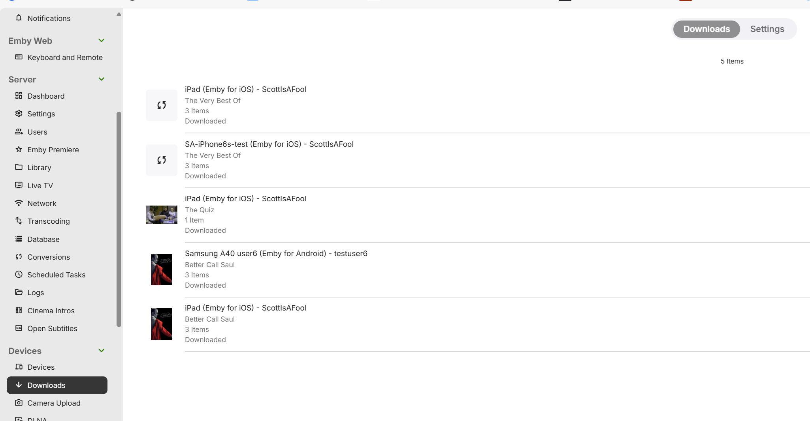
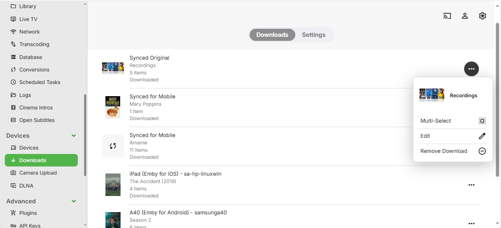

Download-Jobs
Download-Jobs können für den Download einer einzelnen Mediendatei, einer ganzen TV-Staffel oder -Serie und auch für die vollständige Bibliothek sein. Download-Jobs beinhalten auch jene, die für die Folder Sync-Funktion erstellt wurden.
Download-Jobs werden über den Download-Button innerhalb der Emby-Apps erstellt, die Downloads unterstützen, sowie im Kontextmenü über den Download zu...-Button, der für Inhalte der Medienbibliotheken verfügbar ist. Der Download zu...-Button ist auch in der Emby-Web-App verfügbar. Für die verschiedenen verfügbaren Optionen, siehe den Artikel Download-Optionen.
Download-Job-Einstellungen
Beim Erstellen von Sync-Jobs können Sie verschiedene Einstellungen für den Job konfigurieren. Die verfügbaren Einstellungen variieren je nach synchronisiertem Inhalt. Details finden Sie unter Download-Optionen. Die folgenden Optionen stehen zur Verfügung.
Einige der verfügbaren Einstellungen sind:
Qualität
Das gewünschte Qualitätsniveau des synchronisierten Inhalts. Höhere Qualität ergibt bessere Videoqualität, erfordert aber mehr Speicherplatz auf dem mobilen Gerät. Die Option "Original" kann verwendet werden, um das Originalfile zu verwenden, was jedoch dazu führen kann, dass die Datei auf dem Gerät nicht abspielbar ist.
Profil
In einigen Emby-Client-Apps kann ein voreingestelltes Download-Profil sowie die Möglichkeit eines benutzerdefinierten Profils ausgewählt werden.
Nur ungesehene Videos
Es werden nur ungesehene Videos heruntergeladen oder kopiert, und Videos werden vom Gerät entfernt, sobald sie angesehen wurden.
Neuen Inhalt automatisch herunterladen
Neuer Inhalt, der zum Ordner oder zur Kategorie hinzugefügt wird, wird automatisch mit dem Gerät synchronisiert.
Artikelgrenze
Die maximale Anzahl an Elementen, die zu einem bestimmten Zeitpunkt auf das Gerät heruntergeladen werden.
Untertitel
Alle verfügbaren textbasierten Untertitel sind in Download-Jobs enthalten, sodass Sie auch offline eine Untertitelauswahl genießen können.
Verwaltung von Download-Jobs
Einzelne Benutzer können ihre eigenen Download-Jobs verwalten, indem sie den Downloads-Bildschirm öffnen, indem sie Downloads in den App-Einstellungen oder im Gerätebereich der Emby-Web-Einstellungen auswählen.

und für Emby Web
Bei Auswahl dieses Bildschirms und des Downloads verwalten-Buttons wird die Liste der Download-Jobs angezeigt
Die Auswahl des Download-Jobs zeigt die Download-Optionen sowie die Liste der Elemente und den Status an
und eine ähnliche Ansicht der Download-Jobs in Emby Web beim Öffnen des Downloads-Tabs

und durch Klicken auf den ...-Button kann der Download-Job geändert werden

Es ist auch möglich, einen Download zu entfernen
Abbruch von Download-Jobs
Um einen Download-Job abzubrechen, klicken Sie einfach auf das Punktmenü neben einem Job und wählen Sie dann die Download entfernen-Option. Dies löscht den Download-Job sowie alle Dateien, die Teil dieses Jobs kopiert wurden.
Alternativ ist es auch möglich, einzelne Elemente innerhalb eines Jobs abzubrechen, indem man den Download-Job-Bearbeitungsbildschirm öffnet und auf das Punktmenü neben einem Download-Job-Element klickt.
Administrative Verwaltung
Administratoren können alle Download-Jobs für alle Benutzer und Geräte verwalten, indem sie das Server-Dashboard öffnen und zu Downloads im Abschnitt Geräte der Einstellungen navigieren.
Von hier aus können sie alle Jobs, Einstellungen und Elemente verwalten:
Die Aufgaben für Konvertierungen und Downloads erscheinen auf dem Emby Server-Bildschirm Geplante Aufgaben als Medien konvertieren und Medien übertragen.